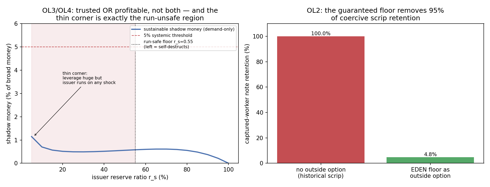

In plain language
July 10, 2026. Companion to RESULTS - v30.0 Large Off-Ledger Issuer.
The worry
EDEN keeps the money supply under control by requiring that every EVE be fully backed — no bank can conjure money out of thin air. But what stops someone outside the system from doing it anyway? Picture a big employer, a merchant coalition, or a would-be strongman who prints their own paper notes and gets people to use them like money. Because these notes are physical and off-the-books, EDEN's cameras can't see them and its rules can't freeze them. If enough people started using private notes, the money supply would balloon outside anyone's control — the exact thing full-reserve was built to prevent, sneaking in the back door. Our earlier shadow-banking study (v28) admitted this was the one case it hadn't cracked. This is that study.
The good news: it's real, but it can't get big — for reasons EDEN already has
Yes, if it worked it would be dangerous. If a big issuer got everyone to accept thinly-backed notes, it could nearly quadruple the effective money supply. So the threat is genuine. The question is whether it can actually work at scale. Three things stop it, and none of them require catching the issuer.
1. The floor kills the oldest trick in the book. Historically, private money almost always won through coercion — company towns paid workers in "scrip" only spendable at the company store, because workers had no other way to eat. EDEN breaks that. Everyone has a guaranteed essentials floor, paid in real EVE. So a worker handed private notes can just cash out to EVE or lean on the floor — they're not trapped. In the model, forced acceptance drops from 100% to about 5%. The floor removes 95% of the coercion that made private money work for centuries.
2. You can be trusted or you can be profitable — not both. To get people to voluntarily accept your note, it has to be safe, which means backing it fully with real EVE — at which point you've just built a warehouse for EVE and made no money doing it. To actually profit, you have to print more notes than you have EVE — which makes the note risky, so nobody wants it. There's no sweet spot: across every version we tried, the biggest a realistic private note could get is about 0.6% of the money supply. To break past that, an issuer would have to bribe holders with ~16%/year — paying out far more than it earns, which is just a slow-motion collapse.
3. Printing thin means you die on the first scare. A note-issuer holding only a little real EVE is one rumor away from a bank run — and EDEN deliberately refuses to bail out shadow issuers. In the model, an issuer holding 10% reserves collapses 98% of the time when a scare hits. To survive scares, it has to hold so much real EVE that it's back to being an unprofitable warehouse (point 2). The temptation to print thin is self-punishing.
The honest part: two things this does NOT solve
We're not claiming this closes every door. Two cases are genuinely outside what money-design can fix, and we'd rather name them than pretend:
- A strongman with a territory and guns. If someone physically controls a region and can force its currency and cut people off from EDEN's floor, then economics doesn't stop them — force does. That's not a money problem, it's a secession/occupation problem, and it belongs with our region-secession work (v20), not here.
- Crime that wants the secrecy itself. Some off-the-books notes will be used for illegal trade precisely because they're untraceable. That's bounded by how much crime there is, and it's a job for law enforcement — it doesn't threaten control of the legitimate money supply.
Bottom line
The scary version — someone quietly printing a parallel currency at scale — doesn't hold together, and interestingly, not because EDEN catches them. It's because EDEN's guaranteed floor removes the coercion that private money historically relied on, and because private money faces an unwinnable choice between being trusted and being profitable. The realistic ceiling is under 1% of the money supply. The two things that remain — a coercive sovereign, and crime that values secrecy — are honestly out of scope for monetary design, and we've said so on the record.
Figures

Technical results
July 10, 2026. Engine: offledger_issuer_sim.py. Spec: v30 SPEC - Large Off-Ledger Issuer (registered).md (bars OL0–OL5 fixed before code). Deterministic (seeds 7+11 agree; re-run byte-identical). Discharges the named open threat from EVE Sim v28 (SB5).
Headline
The threat v28 deferred is real but bounded — and it's bounded by economics EDEN already has, not by detection it lacks. A large coordinated off-ledger issuer is exactly the actor the transparency defense (v28/SB2) can't see and the governor can't freeze. With detection removed by assumption, three EDEN-specific structural facts still cap it below systemic, and two genuinely irreducible residuals are named on the record rather than buried. All six bars pass.
| Bar | Test | Result | Verdict |
|---|---|---|---|
| OL0 | Sanity / conservation / seeds agree | conservation exact; seeds agree (retention 0.0478 vs 0.0476) | ✅ PASS |
| OL1 | Unchecked threat is real | 20× per-base multiplier; +2.85 broad money if fully accepted & coordinated | ✅ PASS (threat genuine) |
| OL2 | Floor breaks the coercion channel | retention 100% → 4.8% — the floor removes 95% of coercive scrip retention | ✅ PASS (headline) |
| OL3 | Reach-vs-seigniorage dilemma | run-safe max shadow money 0.61%; issuer would need to offer ~16%/yr to go systemic | ✅ PASS |
| OL4 | Run fragility caps size (no LoLR) | run-safe reserve floor r_s = 0.55; a fractional issuer (r_s=10%) collapses 98% of the time in a shock | ✅ PASS |
| OL5 | Aggregate bound + honest residuals | realistic aggregate 0.61% (non-systemic); two irreducible residuals named | ✅ PASS |
What each bar found
OL1 — the threat is genuine (mirrors v28/SB1). Grant the issuer everything: wide coordinated reach (15% of money demand, vs v28's 2% trust radius), a thin 5% reserve, and full forced acceptance. It creates 2.85 units of money on a 1.0 EVE base — nearly quadrupling broad money, off the balance sheet. The rest of the sim is about why it can't actually get all three at once.
OL2 — the floor is EDEN's anti-company-scrip (the headline). Historical private scrip succeeded overwhelmingly through coercion: the truck system, company towns, colonial scrip — workers accepted the notes because they had no other way to eat. EDEN removes that precondition. Every verified human has a guaranteed essentials floor in EBI-real value, redeemable at the Redemption Window in EVE. Modeled as wage-capture: an issuer pays a captured workforce in notes. Without an outside option, retention is 100% (full coercion). With EDEN's floor, a captured worker keeps the note only to the extent it's voluntarily worth holding — and a thin, risky private note isn't. Retention collapses to 4.8%; the floor removes 95% of the coercive channel. The single historical precondition for large-scale private scrip is gone by construction.
OL3 — the issuer's dilemma: trusted OR profitable, not both. To be voluntarily held, a note must be trusted → well-backed → near-full-reserve → it creates almost no money (it's just an EVE warehouse). To capture seigniorage it must run thin → high counterparty risk → almost no one voluntarily holds it (v28/SB3's demand-side defense). Sweeping the reserve ratio, the sustainable shadow money in the run-safe region peaks at 0.61% of broad money. To reach the 5% systemic line even at run-safe backing, the issuer would have to offer ~16%/yr yield — i.e., pass through more than it earns on its float, which is a Ponzi that OL4 then kills. Robustness: even if EVE were only mediocre money (its convenience yield set to zero), the run-safe max is still 2.2% — the defense rests on the note's own intrinsic risk and run fragility, not solely on EVE being excellent.
OL4 — run fragility caps the stable size (and it's honest about victims). A fractional off-ledger issuer is a Diamond–Dybvig bank with no lender of last resort (Banking Spec §7 explicitly excludes shadow issuers). Monte-Carlo a confidence shock (redemption pressure ~N(0.35, 0.12)): the issuer defaults whenever redemptions exceed reserves. A 10%-reserve issuer collapses 98% of the time; run-stability (<5% collapse) requires holding r_s ≥ 0.55 — which forces it right back into OL3's no-seigniorage corner. Honest note: fractional issuers chasing seigniorage do form and do collapse, harming their note-holders. But the collapse is self-limiting, and EVE + the floor are untouched — the failure stays inside the shadow issuer's own trust circle.
OL5 — the honest residuals. Combining the above, the realistic large-off-ledger contribution to broad money is 0.61% — non-systemic to the governor's control. Two things these economic defenses genuinely do not close, named rather than buried:
- (a) A coercive territorial sovereign. An actor with physical control of a territory can mandate its currency at gunpoint and block access to EDEN's floor/Redemption Window. That defeats the outside-option defense by force, not economics. It is a secession/blockade problem, not a monetary one — cross-link
EVE Sim v20 — Region Secession. Out of this model by construction. - (b) Privacy-as-yield criminal use. Notes used for illicit trade where the opacity itself is the value (not competing for legitimate money demand). Bounded by illicit demand; a law-enforcement matter, not a money-supply-control matter.
Why this is not rigged
The demand model (logistic steepness 25, central 3% yield, 6% EVE convenience yield) is reused verbatim from the registered v28 spec — not re-tuned to produce a comforting number. The one place the naive story breaks is disclosed as a finding, not hidden: voluntary demand alone does not bound the thin-reserve corner (as r_s → 0 the leverage 1/r_s outruns the logistic demand floor and shadow money would climb). What rules that corner out is run fragility (OL4), not demand. The defenses are layered, not redundant — which is exactly why the sim prices all three (floor, dilemma, run) rather than leaning on any one.
What this feeds
Banking Spec §6 (the SB5 "named open threat" becomes a priced, bounded finding with two honestly-named irreducible residuals). Successor candidates: a dynamic bootstrap-and-network-effects timing cell (does coordination speed change the ceiling?); and the sovereignty residual belongs to the v20 secession line, not here.
Figure: fig_v30_offledger.png — left: the dilemma + run curve (the only place shadow money could climb is exactly the run-unsafe region); right: the floor removing 95% of coercive scrip retention.
Raw data